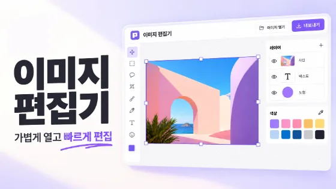

렛츠코딩 라운지
AI 활용바이브코딩
말로 요청하고,
직접 실행하며
작품을 만들어요.
어떤 플랫폼인지 먼저, 무엇을 만들 수 있는지 바로.
말로 요청하고,
직접 실행하며
작품을 만들어요.
완성한 작품을
공유하고,
함께 써요.

65인치 TV · PC 확장 모니터 · 별도 거치대
입구 오른쪽 안내 데스크
패널별 950 × 2380mm 비율을 유지한 전개도입니다.
제작 번호와 치수는 아트워크 밖에 표시했습니다.
학생의 생각을
말로 구체화해요.
실행해 보고
결과를 확인해요.
바꿀 점을 찾고
다시 요청해요.
학생에게 건네는 세 가지 질문. 요청하고, 확인하고, 다시 고치는 흐름을 만듭니다.
말로 요청하고,
직접 실행하며
작품을 만들어요.
완성한 작품을
공유하고,
함께 써요.
AI 활용·바이브코딩을 먼저 읽고, 게임·학습 도구 제작을 이해합니다. 점선은 TV 점유 가정입니다.

그려 보고,
표현을 바꿔 봐요.

직접 해 보고,
규칙을 살펴봐요.
학생의 아이디어에
선생님의 질문을 더해요.
나나쌤 공개 작품 예시를 보고 우리 수업에 적용할 아이디어를 이야기합니다.
AI 활용·바이브코딩으로 플랫폼의 성격을 먼저 알립니다.
게임과 학습 도구를 직접 만드는 수업이라는 점을 전합니다.
실제 Studio 화면을 보며 실행 결과를 확인합니다.
교사는 질문과 피드백으로 학생의 다음 수정을 이끕니다.
공개 작품 예시에서 수업 아이디어를 찾고,
데스크에서 체험과 수업 도입 상담을 이어갑니다.